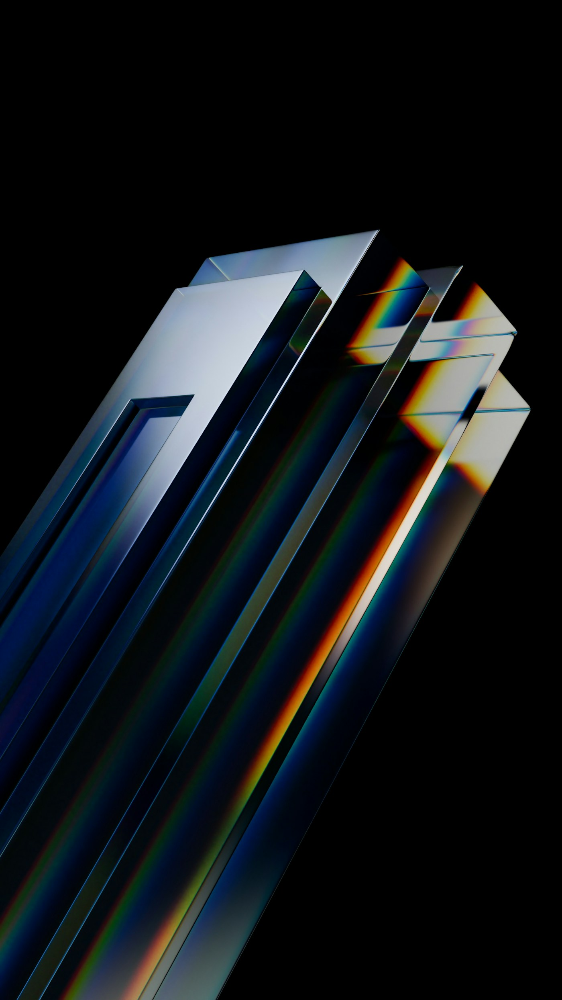
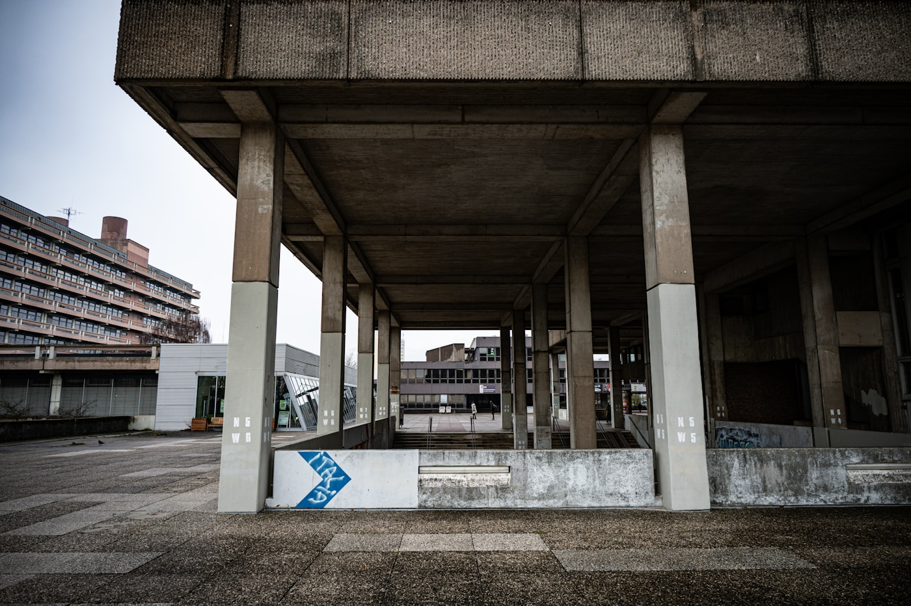

1%しか読めないモデルを、どうやって整列させるのか

2024年5月、AnthropicはDictionary Learningを用いてClaude 3 Sonnet内部から数千万個の特徴方向を抽出した論文を公開した。"Scaling Monosemanticity" と題されたその報告は、スパースオートエンコーダが「ゴールデンゲートブリッジ」「女性の写真」「信頼できないコード」といった人間に読める概念を単一方向として分離できることを示し、アラインメント研究にとって近年で最も明るい報せとして受け止められた。ところが同じ論文の末尾、Templetonらは静かに付け加えている。抽出できた特徴はモデル全体のごく一部であり、完全な機械論的理解にはまだ何桁も足りない、と。
この併記が奇妙に映るはずだ。なぜ我々は、自分自身の認知よりはるかに高次元の系を、低次元の言葉で把握しようとしているのか。そして、その方向に十分な予算と時間を投入すれば、いつかは追いつくはずだと信じているのか。この記事はその信仰の根に一本の定理を差し込む。70年前、制御系の限界を厳密に定式化した一本の不等式が、現代のアラインメント論が走っている経路を原理的に閉ざしている可能性を点検する。
定理を書いたのはイギリスの精神科医で、サイバネティクス第一世代の中でもっとも数学的に禁欲的だった人物、Ross W. Ashby。名前はKaplanのべき乗則ほど知られていないし、Turingほどの知名度もない。だが1956年刊の `Introduction to Cybernetics` 第11章に、彼は必要多様性の法則（Law of Requisite Variety）を置いた。制御するには、制御される系と同じだけの多様性が要る。単純に響くこの命題が、interpretabilityとRLHFが立っている地面を、静かに、しかし決定的に揺らす。
Ashbyの定理
1956年の不等式と1970年のConant-Ashby補題。制御者は被制御系のモデルを内包しなければならない。その必然は現代のinterpretabilityにどう刺さるか。
認識論の階層
BatesonがAshbyを継いだ経路。差異を生む差異、マインドの階層、そして「観察者は系の外に立てない」という撤退不能の結論。
別の答え
Maturana/Varelaのオートポイエーシスと、Luhmannの自己言及システム論が提示する、制御でも理解でもない第三の道。そして、読者に残る問い。
制御するには、制御される系と同じだけの多様性が要る
Ashbyの出発点は驚くほど素っ気ない。環境からの攪乱Dが系に作用し、制御器Rがこれを打ち消そうとする。結果として得られる系の状態Eのバラつきは、DのエントロピーからRのエントロピーを引いた値以下にはならない。式で書けば H(E) ≥ H(D) − H(R)。シャノン情報理論の語彙で、Ashbyが1956年に示したこの不等式は、制御可能性の絶対上限を与えた。攪乱の多様性と同じだけの多様性を制御器が持たなければ、結果のバラつきは決してゼロに近づかない。（Ashby, An Introduction to Cybernetics, Chapman & Hall, 1956, 第11章）
十四年後、ConantとAshbyは続編の論文でさらに硬い結論を出す。"Every good regulator of a system must be a model of that system." 良い制御器は、制御される系のモデルを内部に持たねばならない。外部からの調整だけで系を整えることはできず、制御器は系の構造を自らの内部に再現する必要がある。（Conant & Ashby, International Journal of Systems Science, 1970, 1(2), 89-97）
この命題が生まれた会場を思い出しておく価値がある。1946年から1953年まで、ニューヨークのジョサイア・メーシー・ジュニア財団はサイバネティクスをテーマに10回の会議を開いた。Wiener、von Neumann、McCulloch、Bateson、Mead、Pitts。十数名の異分野の知性が一つのテーブルで神経系と機械と社会を同じ語彙で論じ合った稀有な場だった。Ashbyはイギリスから何度か参加し、1952年の第9回会議でHomeostatというモデル機械を示している。内部の多様性が環境の多様性に追いつかない限り系は安定しない、という論点はそこで既に共有されていた。アラインメントという語が存在する半世紀以上前に、現代の研究者が直面している問題の骨格は切り出されていたのである。（Heims, The Cybernetics Group, MIT Press, 1991）
ここで現代の議論に戻る。Anthropicが2020年以降推し進めてきたCircuits threadも、2023-2024年のSparse Autoencoder（SAE）を用いたMonosemanticity研究も、大きな枠組みでは一つのことをしている。高次元のモデルを、人間が読める低次元の特徴空間に射影する。射影の解像度を上げれば上げるほど理解は追いつくはずだ、という暗黙の仮定に研究全体が依存している。しかしAshbyの不等式は、その仮定が成立する条件を厳格に規定する。人間の観察者がモデルを制御または理解しようとするとき、観察者側の多様性がモデル側の多様性を下回る限り、残差は原理的に消えない。スケーリング則がモデル側の多様性を指数的に増やす方向に働いている一方で、観察者側の帯域は人間の脳という生物学的定数に縛られている。差は埋まるどころか、広がっている。
差異を生む差異、そしてマインドの階層
Ashbyの定理が現代のアラインメント論に直接届いていないのは、間にBatesonという一人の翻訳者が必要だったからである。人類学者として出発し、統合失調症のダブルバインド理論、イルカのコミュニケーション研究を経て、最後には認識論そのものを問い直したGregory Batesonは、Ashbyを情報理論の文脈から認識論の階層へと運んだ。`Steps to an Ecology of Mind` (1972) に集められた論文群のなかで、彼は情報を「差異を生む差異（a difference that makes a difference）」と定義する。世界にある物理的な差異のうち、ある観察者の枠組みにとって意味を持つもの、それだけが情報になる。差異は観察者の側が選びとる。
この定義の重さは、Ashbyの定理と重ねたときに見えてくる。Ashbyは制御器が被制御系の多様性に追いつくべきだと言った。Batesonはそれに続けて、そもそも制御器が「差異」として認識できる範囲は、制御器自身の枠組みに依存していると加えた。観察者の多様性を増やすという選択肢の内側に、もう一段のメタな制約が畳まれている。差異を認識する能力そのものに上限がある限り、観察者がどれだけ計算資源を注ぎ込んでも、それ以上細かい差異は単純に「存在しないもの」として視野から消える。
Batesonは1968年、ブルゴーニュで開かれた "Conference on the Effects of Conscious Purpose on Human Adaptation" で、Ashbyの制御理論を学習の階層理論に拡張する議論を展開した。Learning 0は刺激に対する固定的反応、Learning Iは古典的条件づけ、Learning IIは「学ぶことを学ぶ」すなわち文脈の読み替え、Learning IIIはLearning IIそのものの再編成。Bateson自身は「Learning IIIに到達する人間はまれであり、宗教的転回や統合失調症の寛解のような稀少な経験と結びつく」と慎重に書いた。（Bateson, "The Logical Categories of Learning and Communication", in Steps to an Ecology of Mind, 1972）
なぜこの階層が現代のRLHFに刺さるのか。人間フィードバックをモデルに与える作業は、構造的にはLearning II以下に留まっている。人間のアノテーターは与えられた文脈（「このモデルは無害であるべき」「このモデルは正確であるべき」）の内側で、出力に良し悪しのラベルを付ける。ラベルを付ける人間自身の価値観、文化的枠組み、経済的インセンティブは、モデルと同じ訓練データ分布の一部として埋め込まれている。Batesonの階層観からすれば、人間のアノテーターはモデルより一段高い位置に立っているのではなく、モデルと同じエコロジーに沈んだ一要素である。Ashbyが要求した「制御者は被制御系のモデルを内包する」ための高さを、RLHFの設計は原理的に提供していない。
生きている系は外から制御されない
Ashby-Batesonの系譜が示したのは、外部からの制御には原理的な上限がある、という否定的な結論だった。同じ時期、チリのサンティアゴでは二人の生物学者がまったく別の角度から同じ問題に近づいていた。Humberto MaturanaとFrancisco Varelaは1972年、生命系を特徴づけるのは化学組成でも代謝でも遺伝でもなく、「自身を構成する要素を自らの作動によって産出し続ける組織」であると宣言する。この組織を彼らはオートポイエーシス（autopoiesis、自己産出）と呼んだ。（Maturana & Varela, Autopoiesis and Cognition, D. Reidel, 1980）
オートポイエーシスの核心は、生きている系が環境を「情報として」受けていない、という観察にある。外部からの刺激は系にとって入力ではなく、系の内部構造の変化を誘発する摂動にすぎない。系がその摂動にどう応答するかは系自身の構造が決めており、同じ摂動に対して二つの系は全く異なる反応を示す。MaturanaとVarelaはこれを「構造的カップリング（structural coupling）」と呼び、系と環境は互いを変形しあう関係にあるが、一方が他方を「制御する」という関係は存在しないと論じた。（Maturana & Varela, The Tree of Knowledge, Shambhala, 1987）
具体例として、Varelaは晩年まで免疫系の研究にこの枠組みを適用した。正統的な免疫学は長らく、免疫系を「自己と非自己を区別し、非自己を攻撃する防御システム」として描いてきた。だが1988年以降にVarelaらが発表した "Cognitive networks: Immune, neural and otherwise" の一連の論文群は、この描像を反転させる。免疫系は外部抗原を「敵」として認識しているのではなく、自己のネットワークが抗原を取り込みながら構造を再編成しているにすぎない。自己と非自己の境界は系の外にあるのではなく、系自身が作動の結果として引き直している。（Varela, Coutinho, Dupire & Vaz, Theoretical Immunology, 2, 1988）
同じ1984年、ドイツのビーレフェルトでNiklas Luhmannが `Soziale Systeme` を刊行した。Luhmannはオートポイエーシスを社会システムに移植し、さらに踏み込んだ結論を引き出す。社会システムは自己言及的に作動し、外部から観察することはできるが、外部から制御することはできない。なぜなら、観察者自身もまた何らかの社会システムの内部で作動しているからであり、外部の観察者にみえた位置はシステム間の連結点であって、アルキメデスの点ではない。（Luhmann, Social Systems, Stanford Univ. Press, 1995；原著 1984）
この三人を現代のアラインメント論と重ねると、風景が一変する。Constitutional AI (Bai et al., Anthropic, 2022) は「規範を文書化してモデルに教え込む」という設計だが、規範を書く人間は資本主義、英語圏の法制度、特定の哲学的伝統に埋め込まれた一つのオートポイエティック系にすぎない。RLAIFは「AIがAIを評価する」構造を取るが、評価するAI自身も同じ訓練データ分布からサンプルされている。どちらもLuhmannが言う「システム内観察」であり、Ashbyが要求した外部制御器の条件を満たしていない。これらは欠陥ではなく、構造的な制約の現れだ。アラインメントという語が暗黙に前提している「系の外から規範を注入する操作」は、そもそも実行可能な操作として存在しない。
| 思想家 | 観察者の位置 | 制御可能性 | アラインメント論への含意 |
|---|---|---|---|
| Ashby (1956) | 系の外。ただし多様性の要求を満たす必要 | 原理的に可能だが、H(E)≥H(D)−H(R) という不等式の制約下 | interpretabilityの解像度に絶対上限がある |
| Bateson (1972) | 系の内側に埋め込まれた観察者 | 観察者の枠組み自体が制約。Learning IIまでしか届かない | RLHFは人間の枠組みの内側でしか働かない |
| Maturana & Varela | 系と環境の構造的カップリングの一方 | 制御ではなく相互変形。摂動を与えることはできるが意味は受け手が決める | 「整列」ではなく共進化可能性の設計が課題 |
| Luhmann (1984) | 別の自己言及システムの内部 | 観察はできるが制御はできない。外部の位置が存在しない | Constitutional AIはシステム間観察にすぎない |
解像度を上げる道は、すでに閉ざされている

現代のアラインメント研究の主流は、一言でまとめれば「解像度仮説」に賭けている。モデル内部の特徴をより細かく分離できれば、行動予測が精確になり、価値観の整合が可能になる。Olahらが2020年のCircuits論文で掲げた "Zoom In" という標語は象徴的だ。ズームインすれば見える、という信仰。しかしAshbyの不等式、Batesonの階層、Maturana/Varelaの構造的カップリング、Luhmannの自己言及を通過したあとで、この経路は原理的に閉ざされていると言わざるを得ない。観察者側の多様性が被観察系の多様性を下回る限り、ズームインは局所的な像を細密化するだけで、全体像を生まない。
閉ざされた経路の前で、残された道は二つしかない。
どちらの道も、現在の主流アラインメント論からはほとんど見えていない。解像度仮説に賭ける研究予算が圧倒的多数を占め、共進化可能性の設計は研究コミュニティの周縁に、多様性の削減は「能力の受動的な制限」として軽んじられている。だが本記事の論じてきた系譜が正しければ、主流が走っている経路は七十年前に気づかれていた壁に向かって全速力で進んでいる。
五十年前に気づかれていた天井を、我々は新しい言葉で塗り潰しながら、同じ壁に頭をぶつけている。塗り潰すのを止めて、天井を天井として見直す作業から、次の議論は始まる。